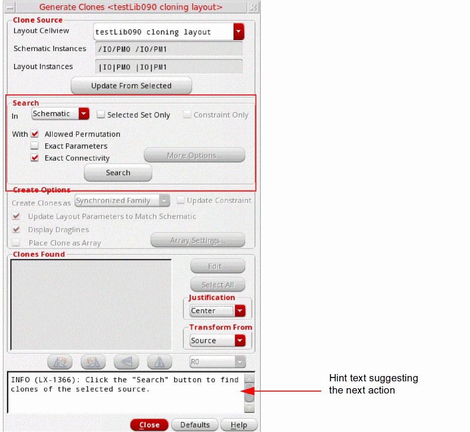
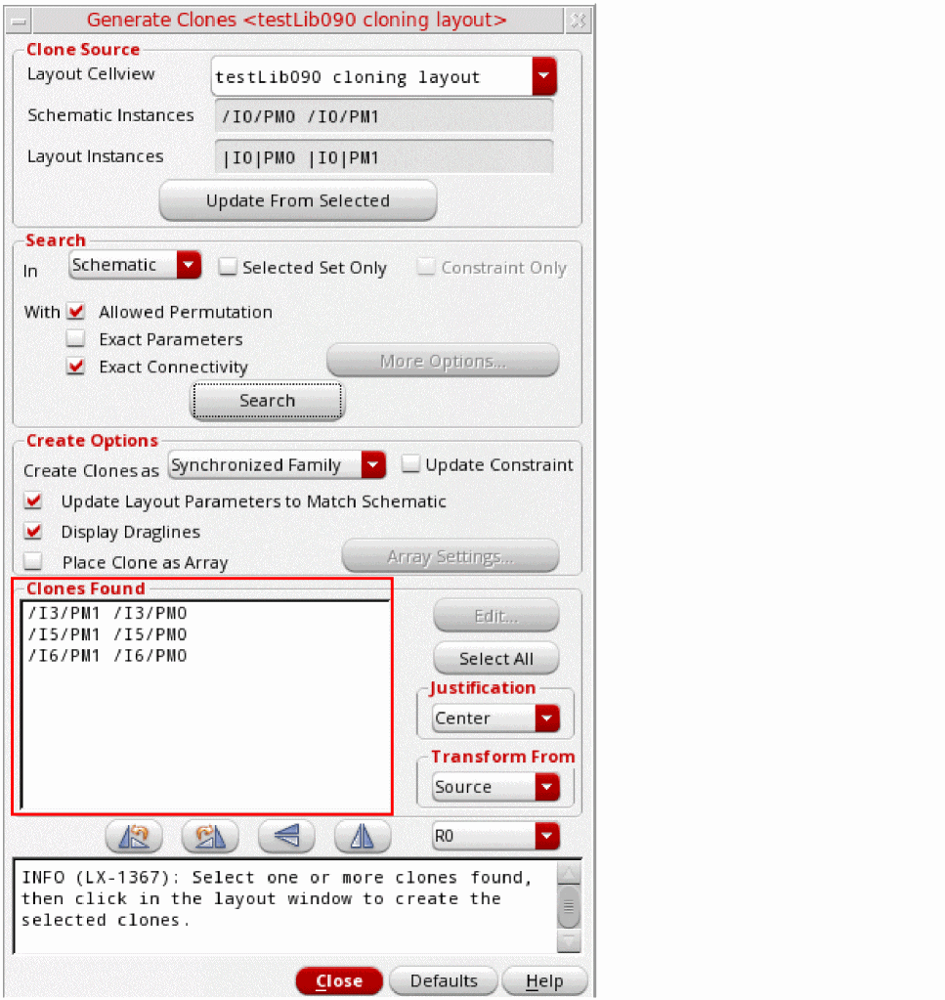
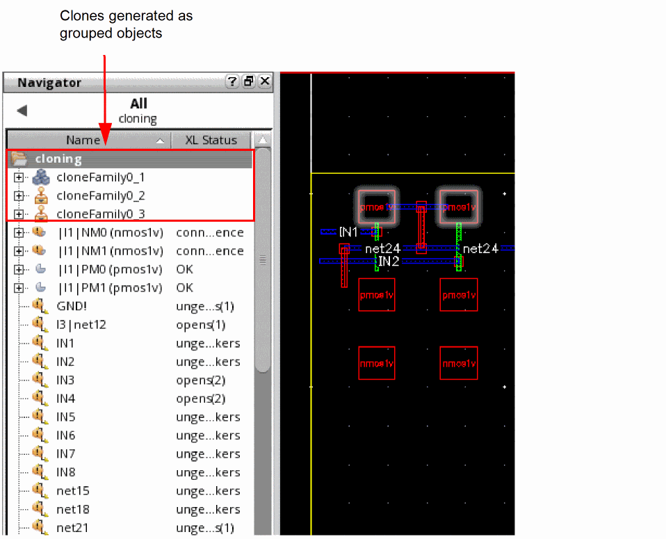

Searching for and Generating the Clone Target
After you have selected a suitable clone source, you can use the Generate Clones form to search for and identify appropriate clones to generate the target clone structure.
To search for and generate the clone target:
-
In the Search group box, choose to search the target clone in the schematic or layout canvas, as appropriate.
 - Choose whether to search for the target clone in the entire Schematic or Layout or within the Selected Set Only.
- Choose the search criteria Allowed Permutation, Exact Parameters, and Exact Connectivity, as appropriate.
-
Click Search to find the matching target structures in the design.
Depending on the design situation.- If the search is run in the schematic and Selected Set Only is deselected, the clone search ignores any devices that are already implemented in the layout.
- If the search is run in the schematic and Selected Set Only is selected, the clone search ignores any devices that are not selected in the schematic or that are already implemented in the layout.
- If the search is run in the layout and Selected Set Only is deselected, the clone search ignores any devices that are not yet implemented in the layout. In addition, the search ignores any devices that are implemented in the layout but placed inside the PR Boundary.
- If the search is run in the layout and Selected Set Only is selected, the clone search ignores any instances that are not selected in the layout. Selected instances placed inside the PR Boundary are not ignored.
-
If the search is run with Constraints Only selected, the clone search is confined to the other Clone Defs of the source Clone Family constraint.
A Clone Def is an ordered list of bound instances contained in a clone.
Irrespective of the design situation, as listed above, devices that are part of a modgen constraint in the schematic are ignored during the clone search.
The matching targets are added to the Clones Found list at the bottom of the form.
If the search is likely to take a long time, you will see a pop-up inviting you to do one of the following.- Click OK to continue the search.
- Click Cancel to return to the Generate Clones form where you can tighten the criteria either by reducing the search area or by requesting exact matches only.
-
Press
Ctrl-cto stop the search. The system may take a few minutes to respond. The matches that were already found are not removed from the list of Clones Found.
-
Choose from Free Objects, Grouped Objects, and Synchronized Family from the Create Clones as pull-down list and select the other Create Options, as required.
- If you choose to display draglines, see Changing the Appearance of Draglines f.
- If you choose to place the clones as an array, see Clone Placement as an Array
-
Select one or more devices from the list of Clones Found and move your cursor into the layout canvas.
An image of the clones to be generated follows the cursor. -
Select the orientation options you want (Rotate, Flip Horizontal, Flip Vertical) and click at the required location in the layout canvas to place the first clone.
The target clones are generated in the layout canvas as grouped objects and you can verify this by using the Navigator assistant, as shown in the figure below.
You can also view the object type of the generated cloneFamily using the Property Editor.
If you selected more than one target structure from the list and you chose not to place the clones as an array, click again to place the second clone, and so on.
Related Topics
Exact and Non-Exact Matches for Cloning
Return to top